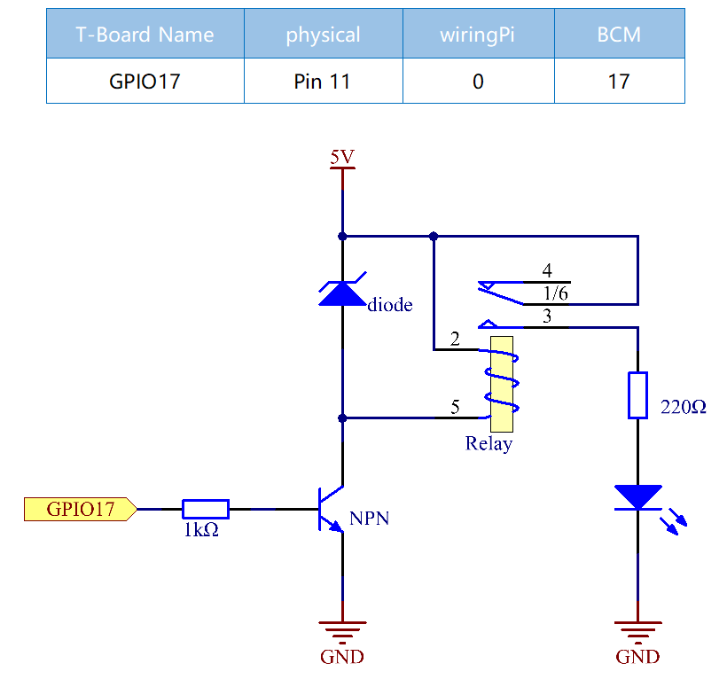

Nota
Ciao, benvenuto nella Community di SunFounder Raspberry Pi, Arduino e ESP32 Enthusiasts su Facebook! Approfondisci Raspberry Pi, Arduino ed ESP32 con altri appassionati.
Perché unirti a noi?
Supporto Esperto: Risolvi problemi post-vendita e sfide tecniche con l’aiuto della nostra community e del nostro team.
Impara e Condividi: Scambia suggerimenti e tutorial per migliorare le tue competenze.
Anteprime Esclusive: Ottieni accesso anticipato agli annunci di nuovi prodotti e alle anteprime.
Sconti Speciali: Approfitta di sconti esclusivi sui nostri prodotti più recenti.
Promozioni e Giveaway Festivi: Partecipa a omaggi e promozioni in occasione delle festività.
üëâ Pronto a esplorare e creare con noi? Clicca [Qui] e unisciti oggi stesso!
1.3.4 Relè
Introduzione
In questa lezione, impareremo a usare un relè, uno dei componenti più comuni nei sistemi di controllo automatico. Quando la tensione, la corrente, la temperatura o la pressione raggiungono, superano o scendono sotto un valore prestabilito, il relè può connettere o interrompere il circuito, permettendo di controllare e proteggere l’apparecchiatura.
Componenti

Principio
Diodo
Il diodo è un componente elettronico a due terminali con un flusso di corrente unidirezionale. Offre bassa resistenza nella direzione del flusso di corrente e alta resistenza nella direzione opposta. I diodi vengono principalmente utilizzati per prevenire danni ai componenti, in particolare causati dalla forza elettromotrice in circuiti polarizzati.

I terminali di un diodo sono polarizzati, con l’estremità positiva chiamata anodo e quella negativa chiamata catodo. Il catodo è solitamente argentato o dotato di una banda colorata. Il controllo della direzione del flusso di corrente è una delle caratteristiche principali dei diodi: la corrente fluisce dall’anodo al catodo. Il comportamento di un diodo è simile a una valvola di non ritorno. Una delle caratteristiche più importanti è la tensione di corrente non lineare. Se la tensione maggiore è collegata all’anodo, la corrente fluisce dall’anodo al catodo in «polarizzazione diretta»; se invece è collegata al catodo, il diodo non conduce e si ha una «polarizzazione inversa».
Relè
Come sappiamo, il relè è un dispositivo che fornisce connessione tra due o più punti o dispositivi in risposta a un segnale di ingresso. In altre parole, il relè offre isolamento tra il controller e il dispositivo che può funzionare sia in corrente alternata (AC) sia in corrente continua (DC). Riceve segnali da un microcontrollore che funziona in DC e quindi necessita di un relè per creare una connessione. Il relè è estremamente utile quando è necessario controllare grandi quantità di corrente o tensione con un piccolo segnale elettrico.
Ogni relè è composto da 5 parti:
Elettromagnete - Consiste in un nucleo di ferro avvolto da una bobina. Quando passa corrente, diventa magnetico, quindi è chiamato elettromagnete.
Armatura - La striscia magnetica mobile è nota come armatura. Quando la corrente scorre, la bobina si energizza creando un campo magnetico che attiva o disattiva i punti «normalmente aperti» (NO) o «normalmente chiusi» (NC). L’armatura può essere azionata sia con corrente continua (DC) sia alternata (AC).
Molla - Quando non scorre corrente attraverso la bobina dell’elettromagnete, la molla tira l’armatura lontano, impedendo la chiusura del circuito.
Set di contatti elettrici - Ci sono due punti di contatto:
Normalmente aperto - collegato quando il relè è attivato, disconnesso quando è inattivo.
Normalmente chiuso - scollegato quando il relè è attivato, collegato quando è inattivo.
Cornice stampata - I relè sono rivestiti in plastica per protezione.
Funzionamento del Relè
Il principio di funzionamento di un relè è semplice. Quando il relè viene alimentato, la corrente inizia a scorrere attraverso la bobina di controllo; di conseguenza, l’elettromagnete si energizza. L’armatura viene così attratta verso la bobina, portando il contatto mobile a unirsi ai contatti «normalmente aperti». In questo modo, il circuito con il carico viene energizzato. Per interrompere il circuito, si verifica il caso opposto: il contatto mobile viene spostato verso i contatti «normalmente chiusi» sotto la forza della molla. In questo modo, l’attivazione e la disattivazione del relè controllano lo stato di un circuito di carico.

Schema Elettrico
Procedure Sperimentali
Passo 1: Costruisci il circuito.

Per Utenti del Linguaggio C
Passo 2: Apri il file del codice.
cd ~/davinci-kit-for-raspberry-pi/c/1.3.4
Passo 3: Compila il codice.
gcc 1.3.4_Relay.c -lwiringPi
Passo 4: Esegui il file eseguibile.
sudo ./a.out
Dopo l’esecuzione del codice, il LED si accenderà. Inoltre, potrai sentire un ticchettio causato dall’apertura del contatto normalmente chiuso e dalla chiusura del contatto normalmente aperto.
Nota
Se, dopo l’esecuzione, il programma non funziona o appare il messaggio di errore: "wiringPi.h: No such file or directory", fai riferimento a Il codice C non funziona?.
Codice
#include <wiringPi.h>
#include <stdio.h>
#define RelayPin 0
int main(void){
if(wiringPiSetup() == -1){ //se l'inizializzazione di wiring fallisce, stampa un messaggio sullo schermo
printf("setup wiringPi failed !");
return 1;
}
pinMode(RelayPin, OUTPUT); //imposta GPIO17(GPIO0) come output
while(1){
// Tic
printf("Relay Open......\n");
delay(100);
digitalWrite(RelayPin, LOW);
delay(1000);
// Tac
printf("......Relay Close\n");
delay(100);
digitalWrite(RelayPin, HIGH);
delay(1000);
}
return 0;
}
Spiegazione del Codice
digitalWrite(RelayPin, LOW);
Imposta la porta I/O a livello basso (0V), quindi il transistor non è alimentato e la bobina del relè è disattivata. Non si genera forza elettromagnetica, per cui il relè si apre e il LED rimane spento.
digitalWrite(RelayPin, HIGH);
Imposta la porta I/O a livello alto (5V) per alimentare il transistor. La bobina del relè riceve corrente, genera una forza elettromagnetica e il relè si chiude, accendendo il LED.
Per Utenti del Linguaggio Python
Passo 2: Apri il file del codice.
cd ~/davinci-kit-for-raspberry-pi/python
Passo 3: Esegui il codice.
sudo python3 1.3.4_Relay.py
Durante l’esecuzione del codice, il LED si accenderà. Inoltre, sentirai un ticchettio causato dall’apertura del contatto normalmente chiuso e dalla chiusura del contatto normalmente aperto.
Codice
Nota
Puoi Modificare/Reimpostare/Copiare/Eseguire/Interrompere il codice seguente. Prima di farlo, però, devi accedere al percorso del codice sorgente come davinci-kit-for-raspberry-pi/python.
import RPi.GPIO as GPIO
import time
# Imposta GPIO17 come pin di controllo
relayPin = 17
# Funzione di setup per configurazioni iniziali
def setup():
# Imposta la numerazione GPIO in modalità BCM
GPIO.setmode(GPIO.BCM)
# Configura relayPin come output,
# con livello iniziale Alto (3.3V)
GPIO.setup(relayPin, GPIO.OUT, initial=GPIO.HIGH)
# Funzione principale per il processo di controllo
def main():
while True:
print ('Relay open...')
# Tick
GPIO.output(relayPin, GPIO.LOW)
time.sleep(1)
print ('...Relay close')
# Tock
GPIO.output(relayPin, GPIO.HIGH)
time.sleep(1)
# Funzione di pulizia per liberare le risorse al termine
def destroy():
# Spegne il LED
GPIO.output(relayPin, GPIO.HIGH)
# Rilascia le risorse
GPIO.cleanup()
# Se il codice viene eseguito direttamente:
if __name__ == '__main__':
setup()
try:
main()
# Quando viene premuto 'Ctrl+C', il programma
# eseguirà la funzione destroy()
except KeyboardInterrupt:
destroy()
Spiegazione del Codice
GPIO.output(relayPin, GPIO.LOW)
Imposta il pin del transistor a livello basso per aprire il relè, lasciando il LED spento.
time.sleep(1)
Attende per 1 secondo.
GPIO.output(relayPin, GPIO.HIGH)
Imposta il pin del transistor a livello alto per attivare il relè e accendere il LED.
Immagine del Fenomeno